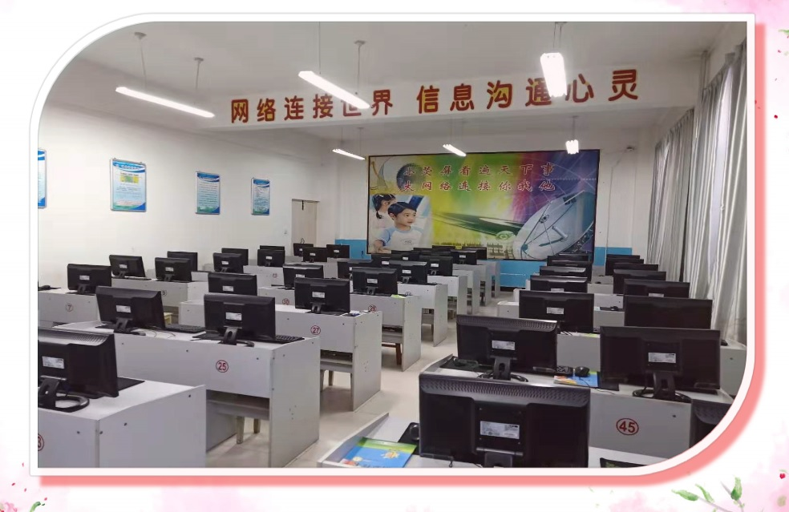

软件工程专业方向

软件工程专业以IT业需求为导向，培养具有良好综合素质和职业道德，掌握扎实的基础理论和专业知识，具有软件分析、设计、开发、测试与管理能力，具备较强工程实践能力、技术创新能力和团队精神，能快速适应软件工程新技术发展并具有国际视野和国际竞争力的高级软件工程师。
专业实施灵活的“211”人才培养模式（其中,2年基础教育,1年面向企业的专业教育,1年企业顶岗实习），在教学上着力推动基于问题、基于项目和基于案例的学习，对于实践性强的课程，采取校企联合“双师制”培养，同时以大学生创新实践活动、科技大赛为补充，突出工程化培养。
教师队伍采用专兼结合的用人机制，现有专职教师12人，其中高级职称7人，讲师5人，博士8人，硕士4人，其中6人具有国外留学或访学经历，此外,专业还从国内外知名软件企业、高校聘请兼职教师承担部分教学工作作为补充。专业教师主持或参加了多项国家、省、部、市及学校的纵向、横向科研和教研项目。获得省优秀教育科研成果奖一等奖、省优秀高等教育科学研究成果二等奖、省科技进步二等奖、三等奖、省高等学校优秀多媒体教学软件三等奖、市科技进步一等奖、省高等教育学会十一五规划课题三等奖等奖项。取得发明专利和实用新型专利10余项，软件著作权10余项。专业教师累计主编和参编出版教材13部，发表论文70余篇，其中EI及ISTP检索论文40余篇。
软件工程专业综合实验室，服务于专业的课程实验和创新创业项目，培养学生获得软件项目管理和开发经验，完成系统开发的实习、实训。软件工程专业综合实验室下设软件工程实验室（系统开发实训基地）、嵌入式技术实验室、移动开发实验室和IOS开发实验室。主要完成基于行业标准和技术的Rational统一过程和测试、软件体系结构、面向对象技术与UML、软件需求与分析、软件测试和质量保证、移动开发和IOS开发等课程的实验。同时，依托国家级大型软件企业，建立了校企合作的实习、实训基地。结合企业项目、师资、环境等对学生进行有针对性的工程能力训练，使学生具备综合运用所学知识解决复杂工程问题的能力。
专业目前已经建立了华为、亿阳安全、东软、华信、北京思特奇、博彦集智、江苏乐建、华宇（大连）、青软、微洋科技等实习基地。